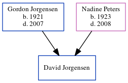

David William Jorgensen
[ Home ] | [ Calendar ] | [ Surnames Index ] | [ Census Index ] | [ Family History ]The child of Gordon Jorgensen and Nadine Peters, David Jorgensen was the fifth cousin on the father's side of Nigel Horne.
Parents
- Gordon David was born in 1921
- Nadine Anita was born in 1923
Family Tree
Generated by ged2site. Last updated on Jun 11, 2024